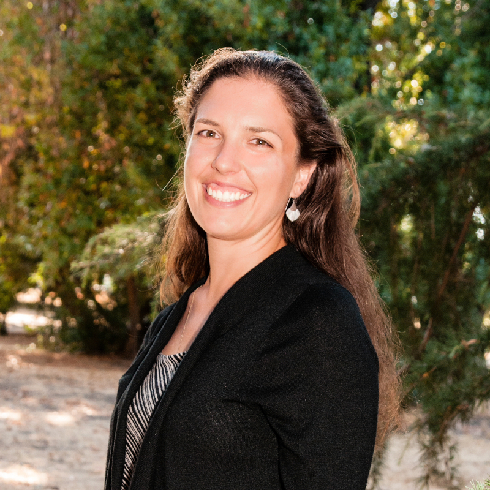

Education
-
Washington University in St. Louis, St. Louis, MO
Ph.D. in Political Science, expected graduation: 2024
Columbia University, New York, NY
M.A. in Quantitative Methods in the Social Sciences, 2016
Thesis: To coerce or to cajole? Power hierarchies of social networks in institutional adaptation to endogenous crisesUniversity of Chicago, Chicago, IL
M.A. in International Relations, 2013
Thesis: Costly Cooperation: How Authoritarian Regimes Can Make Credible CommitmentsStanford University, Stanford, CA
B.A. with interdisciplinary honors in International Relations, 2012
Minor in Modern Languages
Thesis: United Nations Development Programme: An Analysis of the Impact of the Structure on the Efficacy of Its Democratic Governance Projects Current Projects
-
Gaussian Processes for Dummies
Led by Dr. Jacob Montgomery, the foundational belief of this working group is that Gaussian Process Regression (GPR) models can help all social scientists build statistical models that better reflect the complexity of their real-world phenomena of interest, if only the software and concepts were targeted to a social science audience. As part of this objective, I am a primary contributor to a GPR reference text targeting social scientists, and I am working on a new GPR modelling R package that is faster, easier to use, and more flexible than existing software.
Does grassroots post-civil war reconstruction prolong peace?
Using Nepal as a case study, I am examining whether areas that the United Nations Development Programme implemented grass-roots post-civil war reconstruction projects in between 2006 and 2010 had longer periods of peace, as recorded by the Armed Conflict Location and Event Dataset, compared to areas with no such project. All analysis is being conducted in QGIS and R.
Does better public health management lead to more moderate political ideologies?
As evidenced by historical death and population records, Italy’s response to the 1918 flu pandemic varied widely, even between towns just a few miles apart. This project examines whether this variation can explain differences in support for radical political movements over the course of the next century, from Benito Mussolini and fascism in the 1920s-40s to the Communist Red Brigades guerillas in the 1970s and 80s to the most recent Five Star populist movement in the 2010s.
Work Experience
-
Senior Financial Analyst, Kaiser Permanente Santa Clara, CA
Feb 2017 - Jul 2019I supported surgical services with predictive and retrospective data to optimize the utilization of Kaiser’s 35 operating rooms, one of the organization’s most expensive resources, with analyses ranging from a few thousand to over 300 million observations.
Data and Policy Analyst, Acumen LLC Burlingame, CA
Aug 2016 - Feb 2017As an analyst and project manager on a contract with the Center for Program Integrity at the Centers for Medicare and Medicaid, I identified fraud in the Affordable Care Act insurance marketplaces and by Medicare and Medicaid providers
Research Assistant, Prof. Don Davis of Columbia University, New York, NY
Sep 2015 - May 2016Using historical records and ArcGIS, I conducted exploratory geo-spatial analyses on various aspects of urban economics in New York City, including gentrification and female participation in the workforce. I also led workshops for the research team on ArcGIS software.
Research Administrator, Prof. Stephen Haber of Stanford University, Stanford, CA
Feb 2015 - Aug 2015As part of a research team, I researched the navigability of 19th century rivers in Sub-Sahara Africa, South Asia, and Southeast Asia and coded my findings in ArcGIS. This was part of a larger project studying the relationship between 19th century food security, economic market development, and contemporary regime types.
Skills
-
Quantitative Analysis
R, Python, C++, ArcGIS/QGIS, Excel
Foreign Languages
French, Italian, Arabic
Fellowships & Awards
-
- Weidenbaum Center Research Fellowship, 2020-2021
- Phi Beta Kappa, 2012
- Interdepartmental honors from Stanford’s Center on Democracy, Development, and the Rule of Law, 2012
Annamaria Prati
I am a doctoral student in Political Science at Washington University in St. Louis, studying Political Methodology and International Relations.
I am passionate about using Bayesian Analysis and Gaussian Processes to leverage the rich complexities of social sciences data in pursuit of solving the fundamental puzzles of our international political system, such as how states make (and break) promises, how states build up and fall down, and how international institutions glue the world together. Most recently, as a student of Jacob Montgomery, I have been studying Gaussian Process models, particularly how to make them accessible for all social scientists to help them build better statistical models.
Before pursuing my PhD at Washington University, I obtained a Master’s in Quantitative Methods in the Social Sciences (QMSS) at Columbia University, where my thesis used Bayesian analysis to study how an international institution (in this case, the Medieval Catholic Church) responded to an endogenous shock; a Master’s in International Relations at the University of Chicago, where my thesis used critical theory to explore how authoritarian regimes can make credible commitments; and a Bachelor’s in International Relations at Stanford University, where my honor’s thesis presented original research on the United Nation’s efforts to promote democracy around the world.
Outside of academia, I also have extensive experience working as an analyst for the healthcare sector, working as a consultant to the Centers for Medicare and Medicaid as well as an analyst at Kaiser Permanente, where I supported surgical services.